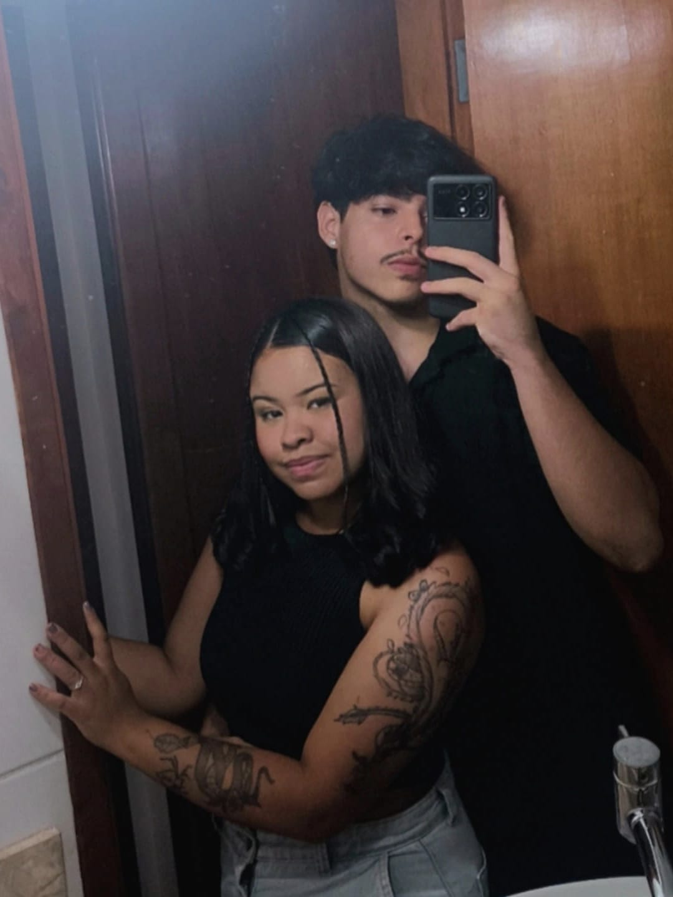
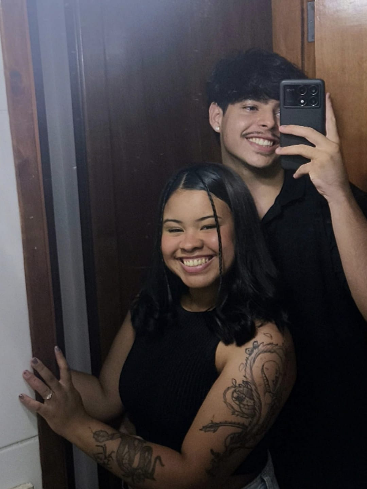
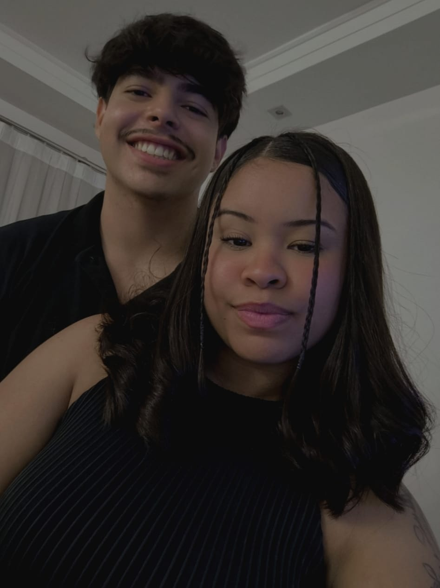
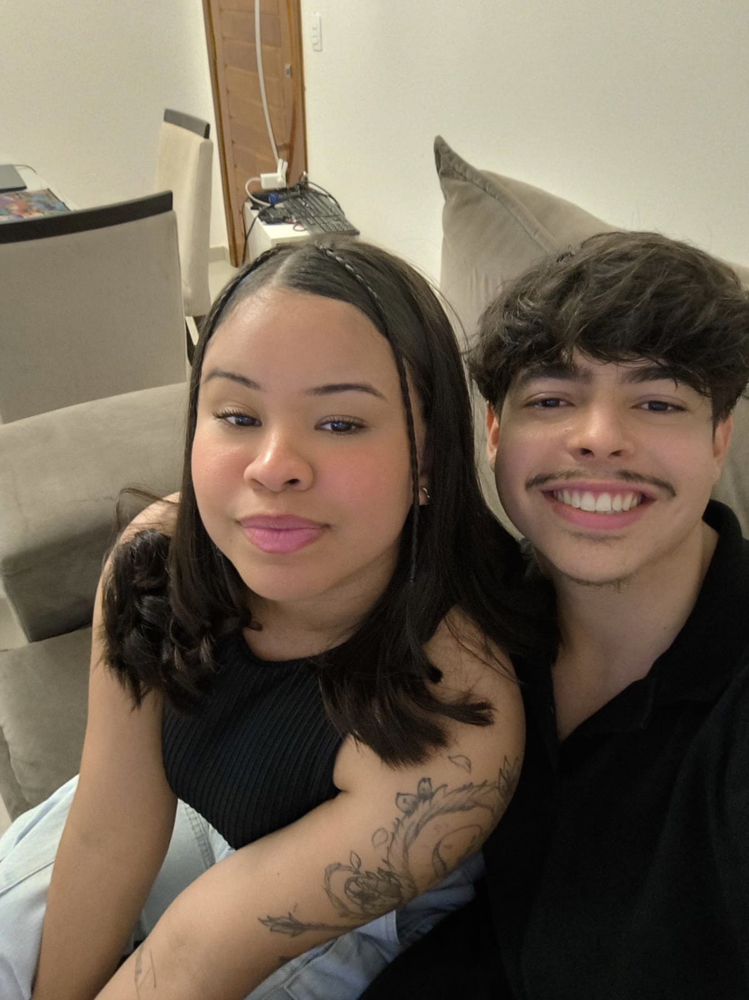
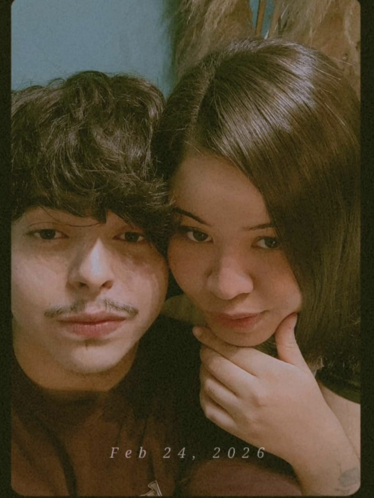
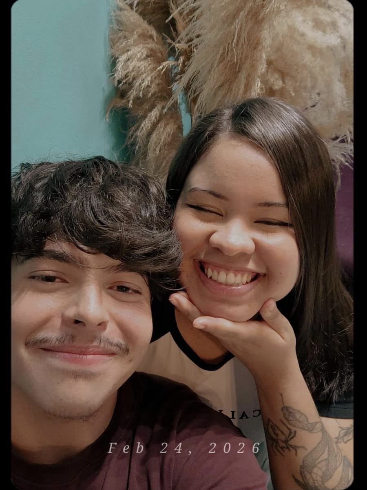

Thales e Leticia
21 DE MARÇO, 1 TEMPORADA
Tudo começou em 16 de dezembro de 2025, quando dois caminhos que não buscavam nada sério acabaram se cruzando de forma inesperada. O que parecia ser apenas mais um math... era na verdade obra do destino. Dias depois, no primeiro encontro, havia ... nervosismo, timidez e um certo desajeito — especialmente da parte dele. Não foi perfeito, não foi digno de filme… mas, de alguma forma, foi real. E talvez tenha sido exatamente isso que fez tudo ser diferente. Ela estava incrível. Ele, completamente sem jeito. O beijo não foi dos melhores… mas foi o suficiente para que algo nascesse ali. Mesmo com a timidez dele e todas as imperfeições do momento, ela decidiu ficar. E, pouco a pouco, conversas se tornaram rotina, encontros se tornaram necessários… e o que era pra ser passageiro começou a criar raízes. Sem perceber, aquilo que nenhum dos dois procurava se transformou em algo verdadeiro. A ideia de não querer um relacionamento foi ficando para trás, dando espaço para um sentimento cada vez mais forte, mais leve… mais certo. E então, no dia 21 de março de 2026, ele fez o pedido, não como um gesto perfeito, mas como uma certeza. A certeza de que, entre tantas possibilidades no mundo, era ao lado dela que ele queria estar. Porque, no fim, não era só sobre como tudo começou… era sobre como, sem perceber, ela se tornou o lugar onde ele encontrou paz, amor, sentido e tudo aquilo que nem mesmo ele sabia que estava procurando. Foi ali que começou — não por acaso, mas como obra do destino — uma longa e linda história de amor… daquelas que não se explicam, apenas se vivem.





